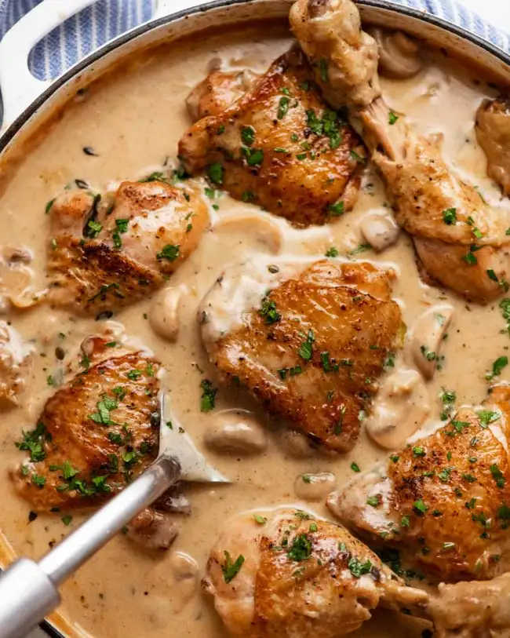

Chicken Fricassée

Description
Chicken Fricassée is a traditional French chicken stew made with browned chicken pieces braised in a creamy white mushroom sauce.
Ingredients
- Chicken pieces;
- Garlic and onion;
- Bay leaves and thyme;
- Butter;
- Mushrooms;
- White wine;
- Chicken stock/broth;
- Flour;
- Cream.
Steps
-
Brown chicken: first, we sprinkle the chicken with salt and pepper. Then in a large skillet or pot that has a lid, melt the butter over medium-high heat. Brown the chicken thighs first, placing them in the butter skin side down. Cook them for 4 – 5 minutes until nice and golden, then turn and cook the other side for just 1 minute. Remove the thighs from the skillet to a plate or tray. Now do the drumsticks. For drumsticks, I usually sear 3 sides which gets decent coverage all around – about 2 minutes on each side. Once done, add them to the plate holding the thighs.
-
Sauté mushrooms: to start the sauce, sauté the onions, mushrooms, thyme and bay leaves for around 5 minutes in the residual butter, adding the garlic towards the end. The mushrooms will change from white to light golden, but won’t go a deep golden brown. There’s no point browning mushrooms well because they will lose the colour when braised. Then add the flour and cook it for 1 minute to cook out the raw floury taste.
-
Add stock and wine: then add the wine and chicken stock. Stir well, scraping the base of the pot to dissolve all the golden bits stuck on the base of the pot into the sauce. This stuff is called “fond” and it’s concentrated flavours that makes the sauce even tastier!
-
Return chicken to pan: return the chicken to the pot, skin side up. It will mostly be submerged, and that’s exactly what we want. The braising liquid will keep the chicken nice and juicy, while the chicken will absorb the tasty sauce flavour!
-
Simmer covered 10 minutes: once the chicken is in the sauce, bring the liquid back up to a simmer. Then adjust the heat so it’s bubbling constantly but not boiling rapidly – see video to see what this looks like. On my stove, it’s medium heat. Cover with a lid and cook for 10 minutes.
-
Uncovered 20 minutes: remove the lid then simmer for a further 20 minutes. In this step, the sauce will reduce and thicken into a thin gravy consistency. “When is the chicken cooked?” – By this time, the chicken will be cooked. 30 minutes mightn’t sound like long for a stew, but that’s all you need because the chicken is cooked submerged in a very hot liquid. It will be completely cooked and quite tender, though not at the “fall-apart-at-a-touch” stage which is intentional.
-
Now make the sauce creamy: remove chicken from the sauce to a plate. Add the cream, stir, then bring the sauce back up to a simmer.
-
Garnish and serve: once the sauce comes back up to a simmer, return the chicken to the sauce. There’s no need to simmer the sauce after the cream is added. Garnish with a good amount of parsley, and it’s ready to serve!
Go back